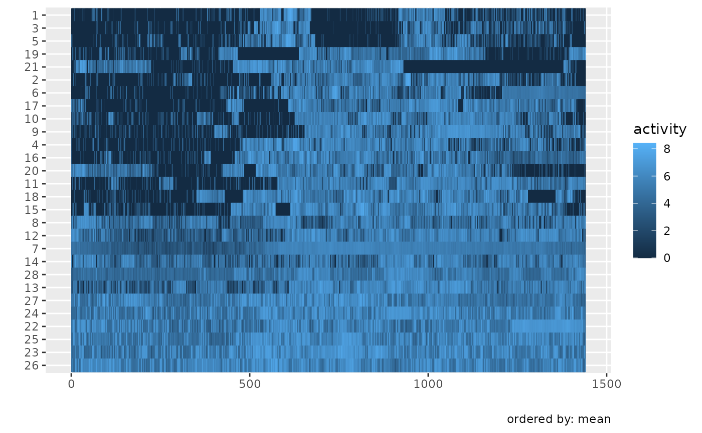

Activity data from a study of congestive heart failure (CHF) patients. Data were originally presented in Huang et al. (2019); these data are publicly available, with download information in the paper.
Format
A tibble with 329 rows and 8 columns:
- id
(numeric) Subject identifier.
- gender
(character)
"Male"or"Female".- age
(numeric) Age in years.
- bmi
(numeric) Body mass index.
- event_week
(numeric) Week of cardiac event.
- event_type
(character) Type of cardiac event.
- day
(ordered factor) Day of the week (
Mon<Tue< ... <Sun).- activity
(
tfd_reg) Minute-by-minute activity counts over a 24-hour period (arg domain 1–1440).
Source
Data are from a study of physical activity in CHF patients conducted by Huang et al. The original data are publicly available; see the paper for download details.
References
Huang, L., Bai, J., Ivanescu, A., Harris, T., Maurer, M., Green, P., and Zipunnikov, V. (2019). Multilevel Matrix-Variate Analysis and its Application to Accelerometry-Measured Physical Activity in Clinical Populations. Journal of the American Statistical Association, 114(526), 553–564. doi:10.1080/01621459.2018.1482750
See also
dti_df for another example dataset,
vignette("x04_Visualization", package = "tidyfun") for usage examples.
Other tidyfun datasets:
dti_df
Examples
chf_df
#> # A tibble: 329 × 8
#> id gender age bmi event_week event_type day
#> <dbl> <chr> <dbl> <dbl> <dbl> <chr> <ord>
#> 1 1 Male 41 26 41 . Mon
#> 2 1 Male 41 26 41 . Tue
#> 3 1 Male 41 26 41 . Wed
#> 4 1 Male 41 26 41 . Thu
#> 5 1 Male 41 26 41 . Fri
#> 6 1 Male 41 26 41 . Sat
#> 7 1 Male 41 26 41 . Sun
#> 8 3 Female 81 21 32 . Mon
#> 9 3 Female 81 21 32 . Tue
#> 10 3 Female 81 21 32 . Wed
#> # ℹ 319 more rows
#> # ℹ 1 more variable: activity <tfd_reg>
library(ggplot2)
chf_df |>
dplyr::filter(id %in% 1:5) |>
gglasagna(activity, order_by = mean)
